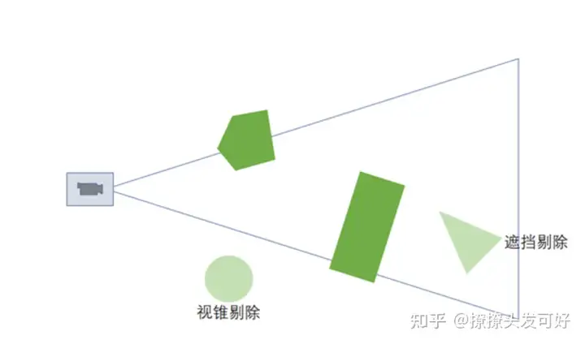
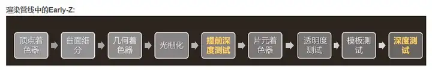
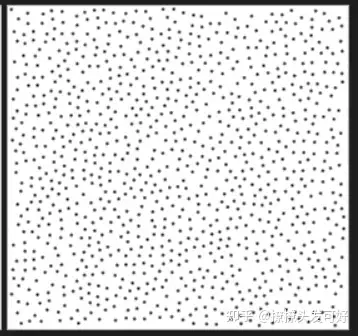

Unity-游戏渲染性能优化
Unity项目的优化思路和实践经验在此总结一下。
1.性能检测
要优化首先需要分析现有的性能瓶颈，获取性能数据，根据情况决定优化什么，如何优化。
性能分析的工具和方法：
-检测工具：Profiler、SnapdragonProfiler、IntelGPA、XCode
检测工具帮助我们实时分析游戏运行时候的资源，CPU、内存、GPU等使用情况，来定位当前项目的瓶颈和优化点。
//todo shader复杂度计算
-抓帧工具：FrameDebug、SnapdragonProfiler、RenderDoc、IntelGPA、XCode
这类工具的作用主要是分析GPU渲染的过程，分析DrawCall是否正常、绘制是否多余、RT是否冗余等问题。
值得一提的是，有些抓帧工具是可以统计每个DC的GPU耗时的，有时候对于性能分析有较大的参考意义，但个人实践过程中感觉RenderDoc的不准确，SnapdragonProfiler的还可以。
SnapdragonProfiler耗时的计算方法为：
DrawCall耗时 = DrawCall耗费的GPUBlocks数量 * GPU频率
//todo 贴一些实例图片
-无法衡量的功能消耗的情况：
可以通过控制变量计算出大致的消耗，比如打不同版本的包横向对比、
在屏幕上使用按钮做功能的开关、使用lua配置等方法开关。
2.性能优化
优化总体来说的思路是找出性能超标消耗最大的部分进行优化。82原则。
以下记录一些常见的优化问题：
(1)物体剔除
场景里绘制的东西越多当然就越费，所以剔除是我们首先应该需要考虑的思路。
下面三个剔除方案由简单到复杂，消耗依次变大。
a.距离剔除LOD：
Lod就是近处保留细节，随着摄像机距离的变大，细节降低，这个渐变过程也要做到自然平滑，符合美术效果。一般使用AlphaFade或者DitherFade进行过渡。
Lod在unity里的场景物体可以使用LodGroup创建不同的Lod级别，并设置各个档位的Render和Mesh。举个例子一颗树，lod0正常渲染随风摆动光照阴影、lod1mesh简化去掉顶点动画优化光照阴影算法、lod2使用Billboard。
不仅是物体，其他地方都可以使用距离LOD的思路，比如ShadowMap的绘制距离、草地的绘制距离、某些功能的刷新频率(随着距离降低频率)。
b.视锥剔除Frustum Cull：
Frustum Cull将不在摄像机视锥内的物体进行剔除，这个在平时使用CommandBuffer开发一些功能的时候会有所体会，比如绘制大批量草地，需要进行视锥剔除。
(涉及大数量的这种计算可以使用四叉树、Cluster这样的结构预先规划，从而优化剔除算法)
c.遮挡剔除Occlusion Culling：

(2)DrawCall合批
a.静态合批
b.动态合批
c.GPU实例化合批
d.SRP Batch
e.UI合批
(3)Overdraw问题
a.透明的Overdraw
半透明因为需要alphablend，我们需要尽量控制渲染的透明物体层数。
b.不透明的Overdraw
我们知道不透明的渲染顺序应该是摄像机由近往远进行绘制，这样绘制确实是不透明的最佳策略。
但是有些情况还是有overdraw的出现，比如在unity中不透明物体是按照物体的中心进行排序的，所以有可能一个物体有大一片区域在视野的最前面，但还是在比较靠后渲染。

渲染管线一般来说深度测试是在fragshader之后，这样可以保证不透明物体绘制的顺序正确性，但fragshader里的计算还是走了。所以出现了EarlyZ这样的提前深度测试的硬件技术，会在fragshader之前就丢弃像素，节省计算。
配合EarlyZ技术的另外一个叫PreZ Pass，是指绘制物体之前将所有物体的深度画出来，正常绘制时将深度测试模式设置为Equal，配合EarlyZ就可以节省不必要的fragshader计算。
但是需要注意，PreZ Pass需要提前画深度，在移动端这本就是一个比较费的操作，有可能PreZ Pass消耗本身大于我们节省的fragshader计算。
还需要注意，AlphaTest材质不支持EarlyZ，如果shader编译之后发现有discard丢弃操作，会关闭EarlyZTest。
c.Overdraw统计工具
unity自带的overdraw查看是替换为透明材质混合出来的，编辑器上看overdraw结果其实是错误的。
(4)阴影优化
a.ShadowCasterPass
阴影投射的Pass其实大多数计算是在VertShader，所以三角形数量顶点数量是绘制阴影性能重点。
另外，我们可以在CPU端做一些优化，比如控制CascadeShadowMap不同级联的绘制频率，远处的阴影降低绘制频率也看不太出来。
b.阴影采样
阴影采样确实是一个比较费的操作，尤其是软阴影，我们使用PCF、PCSS等软阴影方案的时候，需要采样很多像素颜色进行混合平均。
这里PCSS可以使用泊松分布的采样方法，通过采样一个范围的固定数量(如8、16)点的平均值来模拟，而不用遍历所有的像素。如16次采样得到6x6范围内的平均值，节省20次采样。

(5)Shader指令优化
a.减少非恒定数学计算，使用恒定值
vertScale = 10 /22; （X）
static const fixed PI = 3.1415926 ; (√)
b.同样效果的运算，将计算从frag移动到vert
c.减少纹理采样
d.使用ShaderLab的混合指令，而不是手动计算混合
e.尽量避免复杂的数学函数(sin、pow、log)
f.可以的情况下，使用最低的精度。这条目前看起来已经没太大作用了。
g.一次多分支计算
uv.xy += 0.5; (√)
uv.x += 0.5; uv.y += 0.5; （X）
h.使用乘法代替除法，倒数使用rcp
/2 代替为 * 0.5
1.0/x 代替为 rcp(x)
(6)带宽优化
使用Texture Streaming
只加载Camera需要的Mip级别。
(7)shaderlab变体 ab内存优化
还有个比较关注的问题是shaderlab最后打包的ab包非常大，这有可能是我们shader的变体关键字太多，没有做变体剔除，导致编译出来的数量巨多。
shaderlab编译是把所有关键字排列组合起来成为变体，每加一个关键字，默认结果数量就是*2，这是个指数级的增长，所以一般项目里出现这个问题，shader的变体版本一看都是远远超过预期。个人有幸见过400w变体的，哈哈哈。
shader_feature _ SOFT_SHADOW
multi_compile _ SOFT_SHADOW
两种关键字定义方式都是定义了开和关软阴影功能，所以是*2。
shaderlab的关键字是分为两种的，一种是材质级别shader_feature，一种是全局级别multi_compile。
shader_feature我们可以使用unity自带的变体收集功能ShaderVariantCollection，打包的时候只打包我们收集到的变体版本，其余的进行剔除。缺点是剔除不好维护。
multi_compile默认是把变体全部打进shader包。
我们可以在shader打包的过程中进行这类关键字的剔除，方法是在OnProcessShader接口里，将不可能出现的变体组合情况进行剔除。
1 | |
URP里自带的一些关键字，unity代码ShaderPreprocess里根据功能是否开启剔除关键字。
1 | |
引用参考：
https://link.zhihu.com/?target=https%3A//blog.csdn.net/whitebreeze/article/details/118688150
https://zhuanlan.zhihu.com/p/437399913